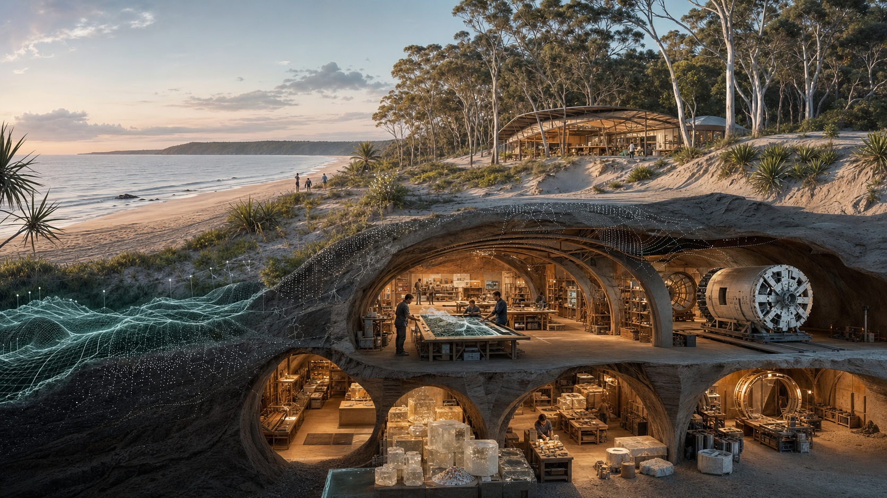

Start With A Maker Space
A practical surface workshop is the first step before any larger subterranean imagination.
Surface first
A maker space gives the big vision somewhere honest to begin.
Before anyone talks about tunnels, citadels or civilisational systems, there is a simpler question: what can a local workshop help people learn, make, repair and document together?

Questions to carry
Workshop questions before system claims.
- What can be made from safe, local, reused or well-understood materials?
- Which tools build confidence rather than dependency?
- What training, supervision and safety checks would make first-timers feel welcome?
- What should be documented as a public recipe, and what should stay private?
- What evidence would make the next prototype easier to trust?
Companion doorway
Use the existing maker-space lab as the first bench.
Public site
Straddie Maker-Space Lab
Open the existing forms, tool trails, sand, concrete and future pages.
Visit siteBuilder
Maker Space Brief
Turn one repair, prototype or workshop idea into a clean Markdown draft.
Use builderBoundary
Safety before momentum
Use the boundary check when tools, machines, materials or public claims need review.
Check